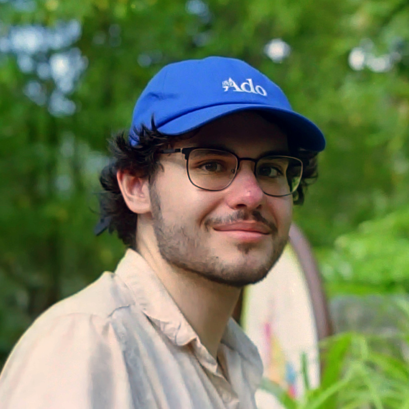

Welcome to my profile page! I am a BSc candidate for Materials and Nanosciences in my final year at the University of Waterloo, and I'm currently a member of the Smith Research Group for Localized Chemistry. My formal education has involved many topics in both physics and chemistry, which I've thoroughly enjoyed. I'm especially interested in glassy systems, solid-state oxide chemistry, and quantum computing, all of which I hope to pursue in my future research. I've been a part of several research groups throughout my education, in which I have gained practical experience in engineering methods and R&D. You can check out my resume page where I elaborate more on my experiences for more details.
Outside of academics, I have many hobbies that I'm very passionate about. I ferment foods, and have cultivated colonies for sourdough, kombucha, sauerkraut, miso, raw olives, mustard, kvass, pao cai, and various asian grain-based wines, including those using the Monascus Purpureus mold. I collect coins as well. My collection mainly consists of north american and european silver coins from the late medieval and early modern periods. I am also passionate about film photography, I shoot 35 mm film, repair mechanical cameras and lenses, and develop my own film. Someday, I hope to create my own experimental colour negative for fun. In addition, I enjoy woodworking and metalsmithing when I have time. I source local wood and dry and process it into cutting boards, boxes, etc. As far as metalworking, I used to make blades and specialized tools too, but now I mostly electrochemically refine and recycle precious metals, and cast them. Finally, love rare fruits! I strive to try every new/uncommon fruit I come across. My favourite fruit of all time is buah pala, the nutmeg fruit.